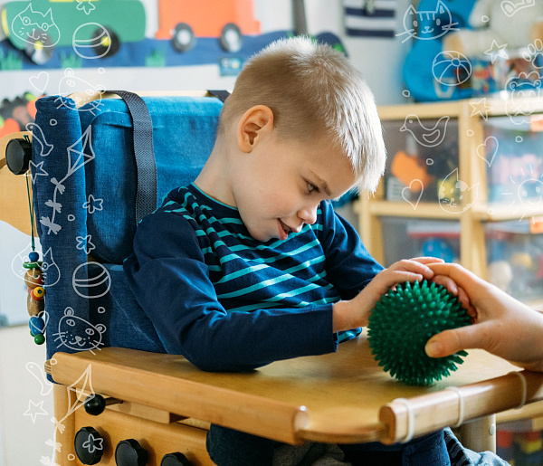
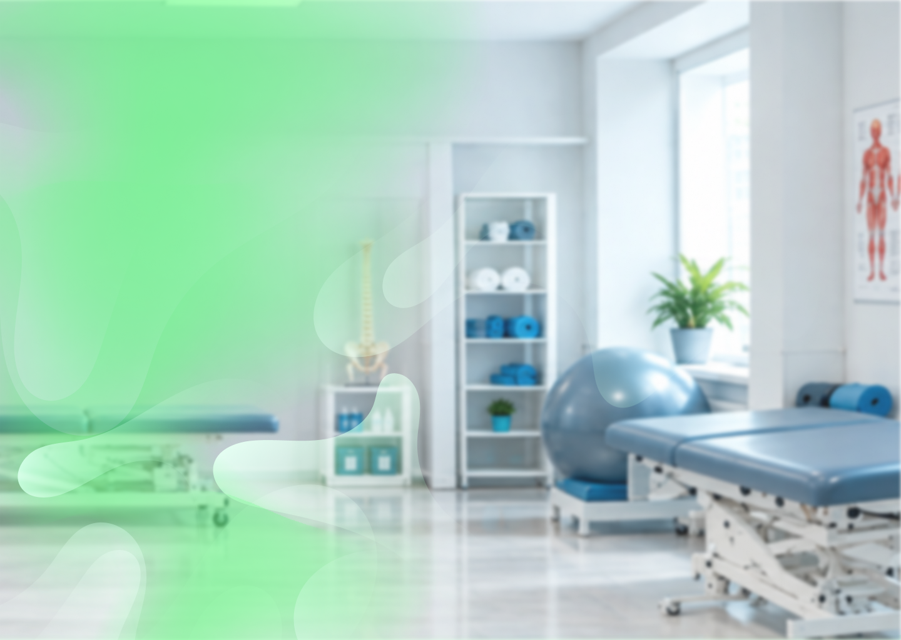
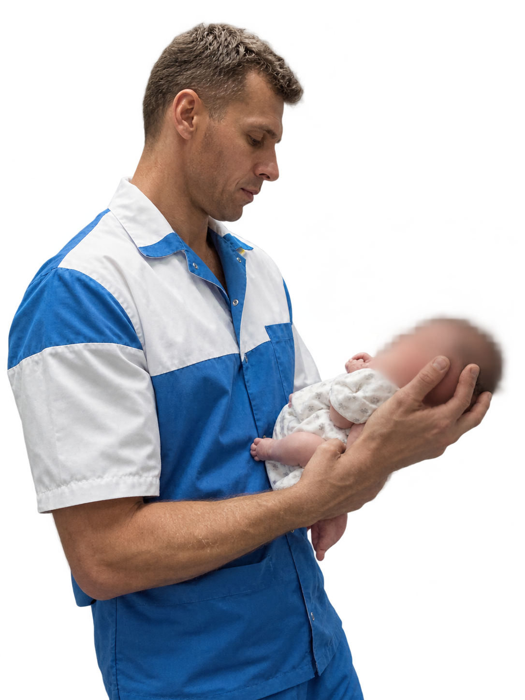

Бочкарев Иван
Александрович
комплексная реабилитация,
лечебный массаж, гидрокинезиология,
ЛФК и физиотерапия
более 12 лет работы
в том числе в СПБГПМУ
на кафедре патологии
новорождённых
5 направлений
комплексной работы
с восстановлением
функций
Индивидуальный подход
к каждому клиенту Работа с выездом на дом
к каждому клиенту Работа с выездом на дом
С какими запросами я работаю
профессиональное направление
Патология новорождённых
Работа с новорождёнными и детьми раннего возраста требует учёта этапов развития, индивидуальных особенностей ребёнка и медицинских показаний.
Что важно для родителей
- Внимательное отношение к анамнезу и заключениям профильных специалистов.
- Согласование реабилитационных мероприятий с лечащим врачом, когда это необходимо.
- Понятное обсуждение целей, методов и дальнейших действий.
- Оценка состояния ребёнка и его функциональных возможностей в пределах компетенции специалиста.

Индивидуальныйподход С учётом возраста
и состояния ребёнка В диалоге
с родителями
индивидуальный подход
Каждый этап развития имеет значение
Реабилитация детей раннего возраста требует особого внимания к возрасту, двигательным возможностям и состоянию здоровья ребёнка. Программа выстраивается индивидуально — от первичной оценки до наблюдения за динамикой и корректировки рекомендаций.
Знакомство с ребёнком и его особенностями
Изучение анамнеза, медицинских заключений и особенностей двигательного развития. При необходимости — рекомендация дополнительной консультации профильного специалиста.
Определение индивидуальных задач
Цели формируются с учётом возраста, состояния и доступных ребёнку двигательных навыков.
Подходящие методы для конкретного ребёнка
По показаниям программа может включать ЛФК, физическую терапию, лечебный массаж и гидрокинезиологию. Методы подбираются индивидуально.
Понимание задач реабилитации
Родители узнают цели занятий, рекомендации по двигательной активности и на какие изменения обращать внимание.
Корректировка по мере развития
Изменения оцениваются в динамике, а задачи и рекомендации пересматриваются с учётом результатов.
Главный принцип Реабилитация ребёнка — не набор одинаковых процедур, а последовательная работа с учётом индивидуальных особенностей, медицинских показаний и задач развития.
когда стоит обратиться
Подход, который учитывает ваши потребности
Выберите, для кого вы ищете помощь, чтобы ознакомиться с основными направлениями работы.
Реабилитация детей с первых месяцев жизни
Индивидуальный подход к двигательному развитию, особенностям здоровья и потребностям ребёнка.
Особенности двигательного развития
Если вы замечаете необычные особенности движений, контроля положения тела или освоения навыков, обсудите их с педиатром и профильным специалистом.
Установленные патологии и неврологические нарушения
При наличии диагноза или рекомендаций врача может потребоваться индивидуальная программа с учётом состояния ребёнка.
Поддержка двигательных навыков
ЛФК и физическая терапия могут применяться для работы над двигательными навыками, если это соответствует индивидуальным показаниям.
Дополнительные методы реабилитации
Лечебный массаж и гидрокинезиология рассматриваются как элементы программы, если подходят ребёнку по возрасту и состоянию.
Карточки описывают поводы для консультации, а не устанавливают диагноз. Методы выбираются индивидуально после оценки состояния и противопоказаний.
образование и квалификация
Документы и сертификаты
Дипломы, документы об образовании и сертификаты о дополнительном обучении помогают ознакомиться с профессиональной подготовкой специалиста.
обратная связь
Отзывы
Здесь можно ознакомиться с впечатлениями пациентов и родителей после взаимодействия со специалистом.
Ваш отзыв может помочь другим
Пока отзывы не опубликованы. Если вы уже обращались за консультацией, поделитесь своим опытом. Перед публикацией отзыв проверяется на наличие персональных и медицинских данных.